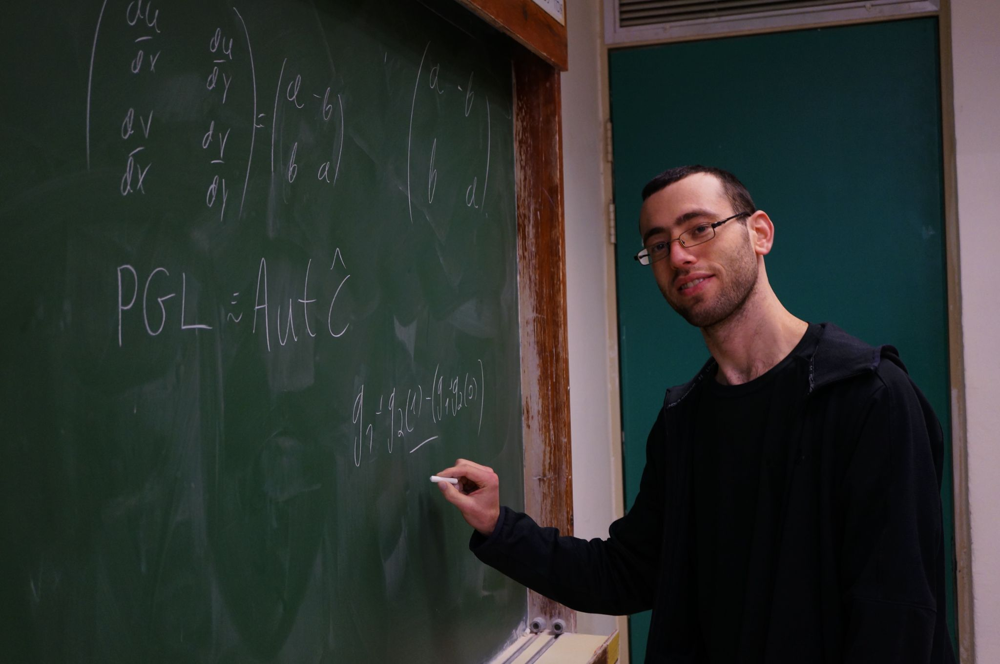

I stand against starvation, ethnic cleansing, and other crimes against humanity taking place in Gaza and the West Bank.
I am a PhD student in the Hebrew University of Jerusalem, supervised by Tomer Schlank and Yoel Groman.
My mathematical fields of interest include Homotopy theory, Differential topology, Category theory and Floer theory.
Currently, my research focuses on generalizing ideas and results from Floer theory by utilizing the new language of Floer homotopy theory. Feel free to reach out to me at: arye.deutsch@mail.huji.ac.il.

Conference talks
Stable homotopical methods in geometry
Geometry and Topology Summer School. Weizmann Institute of Science 2026
Notes
Floer homotopy theory old and new
Homotopy Day. Weizmann Institute of Science 2025
Video
Floer spectral sequence
Young topologist meeting 2024. Münster, Germany
Also
The Faculty Day for 100 years to the The Hebrew University of Jerusalem 2025.
Poster
∞-categorical Introduction to Spectra
Sea of Galilee workshop on algebraic models for spaces 2021. Sea of Galilee, Israel
Seminar talks and (selected) notes
Morava K-Theory and Equivariant Duality on Global Kuranishi Charts
Global Kuranishi charts seminar, HUJI, 2026
Notes
Cohen Jones Segal construction
Floer homotopy seminar, Online, 2024
Video
Intro to Floer homotopy
Floer homotopy seminar, Online, 2024
Notes, Video
Goodwillie TAQ tower
Synthetic methods in almost closed manifolds seminar. Jerusalem 2022
Notes
Adams Novikov spectral sequence and vanishing line
Synthetic methods in almost closed manifolds seminar. Jerusalem 2022
Notes
Morse Homology
Phd student seminar. Jerusalem 2022
Notes (these notes are written as theater play, not as a seminar notes).
Surgery theory: Intersection forms and L groups
Differential topology and the h-cobordism seminar, Jerusalem 2021
Notes (Hebrew)
Lens spaces and Reidemeister torsion
Differential topology and the h-cobordism seminar, Jerusalem 2021
Homotopy groups and pair of pants (Pontryagin's theorem)
Phd student seminar. Jerusalem 2021
Notes (Hebrew)
Frobenius algebras and 2D TQFT
Kan seminar, Jerusalem 2020
Notes
Chromatic spectral sequences and Greek letter construction
Seminar on Computational Aspects of Chromatic Homotopy, Jerusalem 2019
The firefighters problem on 2.5D
Master's thesis
I completed my master's thesis in combinatorics under the guidance of Ohad Noy Feldheim. You can find it here.